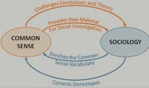

Scope of Sociology, Other Social Sciences and Common SenseHigh priority
Answer by contrasting method (systematic vs everyday) and focus (holistic vs one aspect), then close with the interdisciplinary trend.
Chapter map#
- Discipline of sociology
Common sense
- Everyday knowledge
- Durkheim: avoid
- Marxist: ideology
Convergence
- Hypotheses
- Similar explanations
- Ethnomethodology
- Absorbed concepts
Social sciences
- History
- Economics
- Psychology
- Political science
- Anthropology
Scope
- Formalistic
- Synthetic
- Statics and dynamics
Expanding scope
- Digital society
- Environment
- AI
Exam lens#
The story first#
In simple words#
- Common sense is everyday, untested knowledge; sociology is systematic, evidence-based study of society.
- The two meet in hypotheses, similar explanations, ethnomethodology and absorbed concepts.
- Sociology is holistic: it overlaps with history, economics, psychology, political science and anthropology but studies social relationships and structure.
- The scope is debated (Formalistic vs Synthetic) and keeps expanding (digital society, AI, environment).
| Term | In plain words |
|---|---|
| Common sense | Everyday taken-for-granted knowledge from experience, culture and socialisation. |
| Formalistic School | Simmel's view: study only the forms of social relationships. |
| Synthetic School | Durkheim and Sorokin's view: sociology is a general, integrated science of society. |
| Social statics | Comte's study of social order and stability. |
| Social dynamics | Comte's study of social change and progress. |
| Ethnomethodology | Garfinkel's study of how people use common sense to make social life. |
| Historical sociology | Field joining history and sociology. |
1 · Sociology and Common Sense#
- Sociology and common sense are both ways of understanding the social world, but they differ sharply in their nature, scope, and reliability.
- Sociology is the systematic and scientific study of human society, social relationships, and patterns of social life.
- It relies on empirical investigation, theoretical analysis, and critical reasoning to explain social phenomena.
- Common sense, on the other hand, refers to the everyday, taken-for-granted knowledge and beliefs that people acquire through personal experience, cultural traditions, and socialization.
- It is rooted in subjective perception and is often shaped by prevailing norms, customs, and ideologies.
- Emile Durkheim strongly argued that sociologists should not let common sense contaminate objective sociological inquiry.
- Sociology demands systematic, evidence-based analysis, whereas common sense is often based on untested assumptions and personal experiences.
- From a Marxist perspective, common sense is not a neutral body of knowledge but part of the ruling class ideology.
- It promotes the view that the prevailing capitalist system is fair, reasonable, and beneficial to all, thereby legitimising and reproducing the status quo.
- In this way, common sense is inherently conservative, disregarding the deeper structures of inequality and the true nature of social reality.
- Despite its limitations, common sense is omnipresent - it is used and needed by everyone in everyday life.
- It is popular and frequently relied upon, because it is immediately accessible and resonates with everyday experience.
- However, reliance on common sense can be double-edged: it can sometimes guide action effectively, but it can also perpetuate bias and error.
2 · Convergence of Sociology and Common Sense#


- Although sociology strives to transcend common sense biases, there are points where the two intersect:
- 1. Hypothesis formation: Common sense ideas can inspire initial hypotheses for sociological research, which can then be tested empirically.
- 2. Similar explanations: Functionalist explanations of certain phenomena sometimes resemble common sense interpretations.
- For example, Talcott Parsons’ view that women have an expressive role and men an instrumental role parallels widely held common sense beliefs about gender roles.
- 3. Phenomenology and Ethnomethodology highlight the value of analysing common sense knowledge.
- Harold Garfinkel argued that sociological research should examine how people use common sense to construct and navigate their social worlds.
- 4. Absorption of sociological concepts into common sense: Over time, concepts developed within sociology can enter everyday thinking and common sense explanations.
- In sum, while sociology and common sense have different epistemological foundations - systematic research versus everyday intuition - they occasionally overlap. The challenge for sociologists is to critically evaluate common sense insights, separate myth from reality, and, where appropriate, refine and integrate them into rigorous sociological understanding.
3 · Sociology and its Comparison with Other Social Sciences#
- Sociology studies society, social relationships, institutions, and collective human behaviour.
- Since human life is multidimensional, sociology is closely related to other social sciences such as history, economics, psychology, political science, and anthropology.
- These disciplines often overlap in subject matter and methods, yet each has its own distinct focus and perspective.
- Sociology differs from them because of its holistic approach and emphasis on social relationships and social structure.
- French philosopher Auguste Comte (1798-1857) is the founder of modern sociology In contemporary social sciences, the importance of multi-disciplinarity has increased significantly because complex problems cannot be understood through a single discipline alone.
- Issues such as poverty, climate change, migration, caste inequality, gender violence, globalization, and digital transformation involve economic, political, psychological, historical, and cultural dimensions simultaneously.
- As a result, sociology increasingly interacts with economics, political science, psychology, anthropology, history, and even natural sciences to develop a more comprehensive understanding of society.
- The growth of interdisciplinary fields such as political sociology, economic sociology, social anthropology, environmental sociology, and behavioural economics reflects this trend toward multi-disciplinarity in contemporary research and policymaking.
4 · Sociology and History#
- Sociology and history are closely connected because both study human society and social change.
- E. H. Carr described history as a continuous dialogue between the past and present, while sociologists such as Max Weber and Karl Marx extensively used historical analysis to explain social structures and change.
| Basis | Sociology | History |
|---|---|---|
| Main Focus | Social relationships and institutions | Past events and historical developments |
| Nature | Analytical and theoretical | Descriptive and chronological |
| Time Orientation | Mainly present-oriented | Primarily past-oriented |
| Aim | Discover social patterns and generalizations | Describe unique historical events |
| Method | Surveys, observation, social analysis | Historical records, archives, documents |
- Karl Marx (1818-1883) used the method of historical materialism to understand society Despite these differences, sociology and history are deeply interrelated.
- Historical knowledge helps sociology understand the evolution of institutions such as family, caste, religion, and state.
- At the same time, sociology provides history with analytical concepts like class, status, power, and bureaucracy.
- Historical sociology has emerged as an important interdisciplinary field combining both disciplines.
- Thus, history provides the temporal background for sociology, while sociology helps interpret historical developments in a broader social context.
5 · Sociology and Economics#
- Economics and sociology both study human activities in society, especially those related to production, consumption, and distribution.
- Karl Marx, Max Weber, and Emile Durkheim all examined economic processes sociologically.
- Scottish philosopher Adam Smith (1723-1790) was the founder of modern economics
| Basis | Sociology | Economics |
|---|---|---|
| Main Focus | Society and social relationships | Economic activities and wealth |
| Scope | Broad and holistic | Specialized and narrower |
| Unit of Analysis | Groups, institutions, communities | Individual, firm, market |
| Approach | Social and cultural | Economic and quantitative |
| Concern | Social inequality and interaction | Production, distribution, consumption |
- The two disciplines overlap considerably.
- Economic behaviour is influenced by social norms, caste, class, gender, religion, and culture.
- Weber’s study of Protestant ethics and capitalism illustrates this relationship clearly.
- Similarly, economic inequalities influence social stratification and mobility.
- Economic sociology today studies markets, labour, consumption, and globalization sociologically.
- In essence, economics studies economic life specifically, whereas sociology studies economic activities within the wider social structure.
6 · Sociology and Psychology#
- Both sociology and psychology study human behaviour, but their perspectives differ.
- Psychology focuses on the individual mind, emotions, personality, and cognition, while sociology examines how society and social groups shape behaviour.
- George Herbert Mead and Sigmund Freud significantly influenced debates on the relationship between individual personality and society.
- Austrian neurologist Sigmund Freud (1856-1939) popularized the technique of psychoanalysis in psychology
| Basis | Sociology | Psychology |
|---|---|---|
| Main Focus | Social behaviour and groups | Individual behaviour and mind |
| Unit of Analysis | Society, groups, institutions | Individual |
| Approach | Social and collective | Mental and individual |
| Concern | Social interaction and culture | Emotions, personality, cognition |
| Orientation | Mainly macro and micro social processes | Mainly individual-level analysis |
- The disciplines overlap in areas such as socialization, attitude formation, deviance, and group behaviour.
- Social psychology emerged as a bridge between sociology and psychology.
- Sociologists study how social structures shape personality, while psychologists examine how individual mental processes influence behaviour.
- Thus, psychology explains behaviour at the individual level, whereas sociology explains how social environment shapes that behaviour.
7 · Sociology and Political Science#
- Sociology and political science are closely related because political institutions function within society.
- Rajni Kothari and Andre Beteille showed how caste, class, and social structure influence political processes in India.
- Kautilya wrote the Arthashastra, one of the world’s oldest texts on statecraft and politics
| Basis | Sociology | Political Science |
|---|---|---|
| Main Focus | Society and social relations | State, government, and power |
| Scope | Broad social processes | Political institutions and governance |
| Concern | Social order and interaction | Authority, law, and administration |
| Basis | Sociology | Political Science |
|---|---|---|
| Approach | Sociological perspective | Political and legal perspective |
| Unit of Analysis | Groups and institutions | State and political organizations |
- The two disciplines converge in the study of power, authority, leadership, democracy, political participation, and social movements.
- Political sociology emerged as a specialized field studying the interaction between society and politics.
- Social factors such as caste, religion, ethnicity, and class strongly influence voting behaviour and political mobilization in India.
- Therefore, political science studies political systems specifically, while sociology studies politics as one aspect of social life.
8 · Sociology and Anthropology#
- Sociology and anthropology are often called sister disciplines because both study human society and culture.
- Traditionally, anthropology focused on tribal and small-scale societies, whereas sociology concentrated more on modern industrial societies.
- Scholars such as A. R. Radcliffe-Brown and Bronislaw Malinowski strongly influenced sociological methods and theory.
- Prof. M.N. Srinivas (1916-1999) is a key figure in both sociology and anthropology in India
| Basis | Sociology | Anthropology |
|---|---|---|
| Main Focus | Modern and complex societies | Tribal and small-scale societies |
| Scope | Social institutions and processes | Culture and human evolution |
| Method | Surveys, statistics, social analysis | Participant observation, ethnography |
| Orientation | Contemporary social problems | Comparative and cultural |
| Unit of Study | Large societies and institutions | Small communities and cultures |
- The distinction between the two disciplines has gradually narrowed.
- Sociologists increasingly use ethnographic methods, while anthropologists now study urban and industrial societies.
- Indian sociologists such as M. N. Srinivas combined sociological and anthropological approaches in village studies.
- In short, anthropology provides deep cultural understanding, while sociology offers broader analysis of social institutions and structures.
- In conclusion, sociology maintains close interdisciplinary relations with all major social sciences because human society cannot be understood through a single perspective.
- While each discipline has its own distinct focus and methods, sociology occupies a unique position due to its holistic and integrative study of social life.
9 · Scope of Sociology#
- The scope of sociology refers to the range of subjects, issues, and areas that sociology studies.
- Since sociology is a relatively new social science, sociologists have long debated what exactly should be included within its field of study.
- Broadly, sociology studies society, social relationships, institutions, social processes, and human behaviour in social context.
- However, different sociologists have defined its scope differently.
- Two major viewpoints regarding the scope of sociology are the Formalistic School and the Synthetic School.
- Formalistic School argued that sociology should study only the “forms” of social relationships and not their concrete content.
- Georg Simmel believed sociology should focus on patterns of interaction such as cooperation, conflict, competition, domination, and subordination.
- According to this school, economics, politics, and religion are already studied by separate disciplines, so sociology should confine itself to studying forms of social interaction common to all fields.
- Synthetic School viewed sociology as a general science of society.
- It argued that sociology should study all aspects of social life in an integrated manner.
- Emile Durkheim believed sociology studies social facts and collective life, while thinkers like Sorokin emphasized that sociology synthesizes knowledge from different social sciences.
- This approach gave sociology a broad scope including family, religion, economy, polity, culture, social change, and social institutions.
| Basis | Formalistic School | Synthetic School |
|---|---|---|
| Main Idea | Sociology should study only the forms of social relationships | Sociology should study society in a comprehensive manner |
| Focus | Pure sociology; limited scope | Broad and integrated scope |
| Nature | Specialized discipline | General social science |
| What Sociology Studies | Forms of interaction like cooperation, conflict, competition | All aspects of social life and social institutions |
| View on Other Social Sciences | Sociology should remain distinct from other social sciences | Sociology should synthesize findings of all social sciences |
| Major Thinkers | Georg Simmel, Vierkandt, Small | L. T. Hobhouse, Sorokin |
- Auguste Comte, regarded as the father of sociology, envisaged the scope of sociology as encompassing the study of both social continuity and social change.
- He divided sociology into:
- Social Statics - study of social order, stability, and institutions such as family, religion, and state; and
- Social Dynamics - study of social change, progress, and evolution of society.
- Emile Durkheim defined sociology as the study of social facts.
- Durkheim emphasized that sociology studies these collective social realities rather than individual behaviour.
- Max Weber, however, defined sociology as the interpretive understanding of social action.
- According to Weber, sociology studies actions that individuals attach meaning to and direct toward others.
- Thus, Weber shifted sociology’s focus toward meanings, motives, and social interaction of social actors.
- As the world is changing, the scope of sociology is also widening
10 · Expanding Scope of Sociology#

- The scope of sociology has continuously expanded with changes in society.
- Earlier, sociology mainly studied institutions such as family, religion, caste, and village communities.
- Today, sociology examines a wide range of contemporary issues including globalization, social media, environment, alternative sexuality and genders, and social impacts of new technologies like blockchain, robotics, and artificial intelligence.
- Sociology today engages with new social movements, digital society, identity theft, and cyber culture.
- New branches such as medical sociology, environmental sociology, sociology of pandemics, and sociology of globalization have emerged.
- This expanding scope reflects sociology’s dynamic nature and its ability to adapt to changing social realities.
- In conclusion, sociology has evolved from a limited study of social relationships to a broad and dynamic discipline studying almost every aspect of social life.
Traps#
| Trap | What goes wrong, and the rule |
|---|---|
| Formalistic vs Synthetic | Formalistic (Simmel) = forms only; Synthetic (Durkheim, Sorokin) = integrated whole. Exam-hall rule: forms = Simmel; whole = Synthetic. |
| Statics vs dynamics | Statics = order and stability; dynamics = change and progress. Exam-hall rule: statics sits still, dynamics moves. |
| Common sense is not all wrong | The handout says it is double-edged: it guides action but can carry bias and error. Exam-hall rule: give both sides before concluding. |
| Who studied tribal societies | Anthropology traditionally studied tribal and small-scale societies; sociology studied modern industrial societies, but the gap has narrowed. Exam-hall rule: write 'traditionally' and add the narrowing. |
Recall sheet#
Read once, hide it, then rebuild the chapter from memory.
- What does Durkheim say about common sense? It must not contaminate objective sociological inquiry
- Marxist view of common sense? Part of ruling-class ideology that legitimises the status quo
- Four points where sociology and common sense meet? Hypotheses, similar explanations, ethnomethodology, absorbed concepts
- Who is the ethnomethodology voice here? Harold Garfinkel
- Which Parsons idea parallels common sense? Women expressive, men instrumental
- Sister disciplines? Sociology and anthropology
- Who founded modern sociology? Modern economics? Comte (1798-1857); Adam Smith (1723-1790)
- Unit of analysis in economics vs sociology? Individual, firm, market vs groups, institutions, communities
- Formalistic School's thinker? Georg Simmel
- Synthetic School's thinkers? Durkheim and Sorokin
- Comte's two divisions? Social statics and social dynamics
- Weber's definition? Interpretive understanding of social action
- New branches today? Medical, environmental, pandemics, globalisation
Abbreviation column#
| Short form | Full form | One-line meaning |
|---|---|---|
| AI | Artificial Intelligence | One of the new areas sociology studies |
| PYQ | Previous Years' Questions | Questions UPSC has already asked |
Revise#
| Day | What to do |
|---|---|
| Day 0 | Read the Exam lens and the notes; mark the chapter done |
| Day +1 | Recall sheet: read once, hide, rebuild |
| Day +3 | Flashcards: missed ones only |
| Day +7 | Quick quiz; fix each miss against the Traps |
| Day +21 | Write two Mains answers from memory using the skeletons |
| Day +45 | Blank-page test: redraw the chapter map |
Test yourself#
Quick quiz
Flashcards
Tap the card to flip.
Mains answer skeletons
One for each Mains PYQ quoted in the handout. Tap to open; try the answer first.
2025 · 10 marks · In what way is the scope of sociology unique? Explain.
Question. In what way is the scope of sociology unique? Explain.
- Intro: name Scope of Sociology, Other Social Sciences and Common Sense and state the central idea in one line (see The story first).
- Body: build the answer from the notes under: Scope of Sociology; Expanding Scope of Sociology.
- Close: finish with the matching criticisms section and a one-line judgement.
2025 · 10 marks · What is the relationship (similarities and differences) between sociology and history in terms of th…
Question. What is the relationship (similarities and differences) between sociology and history in terms of their area of study and methodology? Discuss
- Intro: name Scope of Sociology, Other Social Sciences and Common Sense and state the central idea in one line (see The story first).
- Body: build the answer from the notes under: Sociology and History.
- Close: finish with the matching criticisms section and a one-line judgement.
2025 · 10 marks · What is common sense? How are common knowledge and sociology related to each other? Explain.
Question. What is common sense? How are common knowledge and sociology related to each other? Explain.
- Intro: name Scope of Sociology, Other Social Sciences and Common Sense and state the central idea in one line (see The story first).
- Body: build the answer from the notes under: Sociology and Common Sense; Convergence of Sociology and Common Sense.
- Close: finish with the matching criticisms section and a one-line judgement.
2023 · 20 marks · Do you think that common sense is the starting point of social research? What are its advantages and…
Question. Do you think that common sense is the starting point of social research? What are its advantages and limitations? Explain.
- Intro: name Scope of Sociology, Other Social Sciences and Common Sense and state the central idea in one line (see The story first).
- Body: build the answer from the notes under: Sociology and Common Sense; Convergence of Sociology and Common Sense.
- Close: finish with the matching criticisms section and a one-line judgement.
2023 · 10 marks · Discuss the relationship between sociology and political science.
Question. Discuss the relationship between sociology and political science.
- Intro: name Scope of Sociology, Other Social Sciences and Common Sense and state the central idea in one line (see The story first).
- Body: build the answer from the notes under: Sociology and Political Science.
- Close: finish with the matching criticisms section and a one-line judgement.
2022 · 10 marks · Delimit the scope of Sociology in relation to other social sciences.
Question. Delimit the scope of Sociology in relation to other social sciences.
- Intro: name Scope of Sociology, Other Social Sciences and Common Sense and state the central idea in one line (see The story first).
- Body: build the answer from the notes under: Sociology and its Comparison with Other Social Sciences; Scope of Sociology; Expanding Scope of Sociology.
- Close: finish with the matching criticisms section and a one-line judgement.
2021 · 10 marks · How is Sociology related to common sense?
Question. How is Sociology related to common sense?
- Intro: name Scope of Sociology, Other Social Sciences and Common Sense and state the central idea in one line (see The story first).
- Body: build the answer from the notes under: Sociology and Common Sense; Convergence of Sociology and Common Sense.
- Close: finish with the matching criticisms section and a one-line judgement.
2021 · 20 marks · From the viewpoint of growing importance of multidisciplinary, how do you relate sociology to other …
Question. From the viewpoint of growing importance of multidisciplinary, how do you relate sociology to other social sciences?
- Intro: name Scope of Sociology, Other Social Sciences and Common Sense and state the central idea in one line (see The story first).
- Body: build the answer from the notes under: Sociology and its Comparison with Other Social Sciences.
- Close: finish with the matching criticisms section and a one-line judgement.
2020 · 10 marks · In the Context of globalization, has the scope of Sociology been changing in India? Comment
Question. In the Context of globalization, has the scope of Sociology been changing in India? Comment
- Intro: name Scope of Sociology, Other Social Sciences and Common Sense and state the central idea in one line (see The story first).
- Body: build the answer from the notes under: Scope of Sociology; Expanding Scope of Sociology.
- Close: finish with the matching criticisms section and a one-line judgement.
2017 · 20 marks · Discuss the changing equations of discipline of Sociology with other social sciences.
Question. Discuss the changing equations of discipline of Sociology with other social sciences.
- Intro: name Scope of Sociology, Other Social Sciences and Common Sense and state the central idea in one line (see The story first).
- Body: build the answer from the notes under: Sociology and its Comparison with Other Social Sciences.
- Close: finish with the matching criticisms section and a one-line judgement.
2016 · 10 marks · Is sociology common sense? Give reasons in support of your argument.
Question. Is sociology common sense? Give reasons in support of your argument.
- Intro: name Scope of Sociology, Other Social Sciences and Common Sense and state the central idea in one line (see The story first).
- Body: build the answer from the notes under: Sociology and Common Sense; Convergence of Sociology and Common Sense.
- Close: finish with the matching criticisms section and a one-line judgement.
2014 · 10 marks · How is Sociological approach to human actions different from that of psychological approach?
Question. How is Sociological approach to human actions different from that of psychological approach?
- Intro: name Scope of Sociology, Other Social Sciences and Common Sense and state the central idea in one line (see The story first).
- Body: build the answer from the notes under: Sociology and Psychology.
- Close: finish with the matching criticisms section and a one-line judgement.
2013 · 10 marks · Compare and contrast Sociology with Anthropology.
Question. Compare and contrast Sociology with Anthropology.
- Intro: name Scope of Sociology, Other Social Sciences and Common Sense and state the central idea in one line (see The story first).
- Body: build the answer from the notes under: Sociology and Anthropology.
- Close: finish with the matching criticisms section and a one-line judgement.